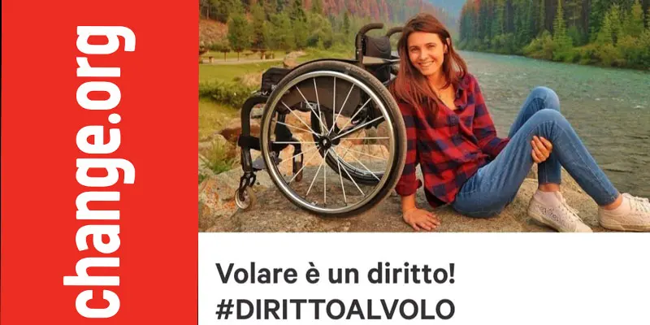
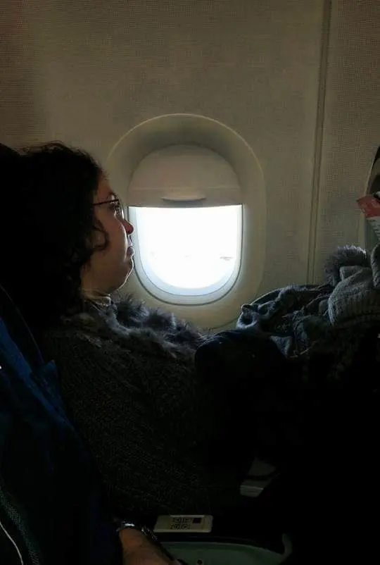
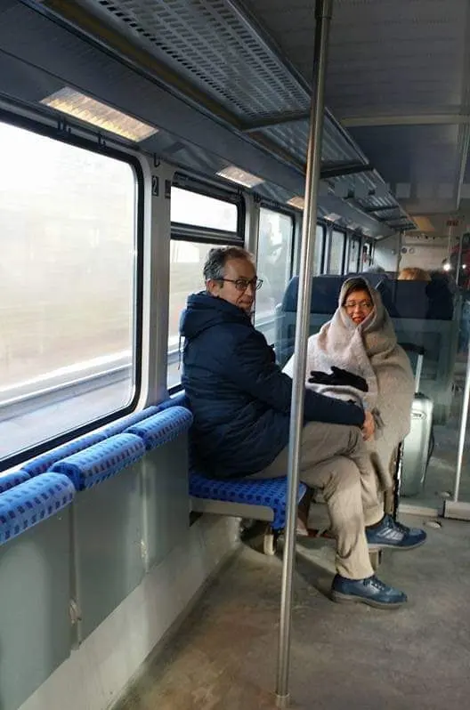
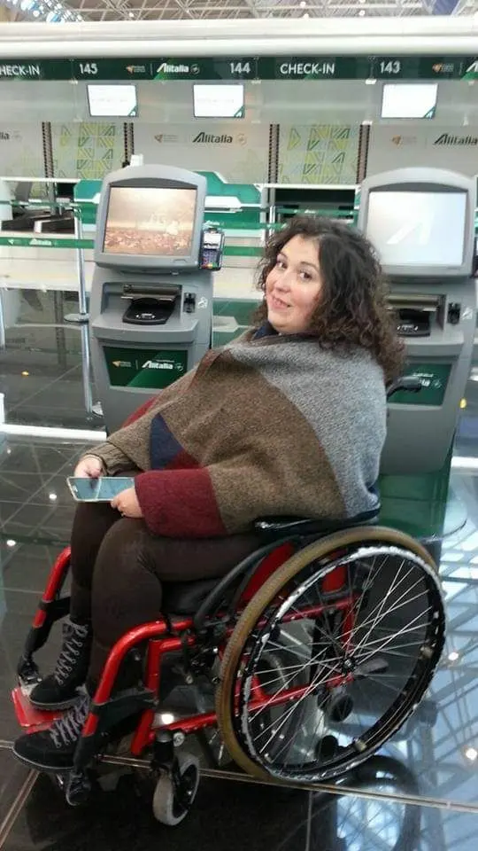
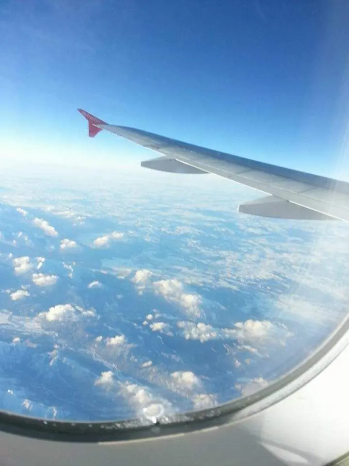
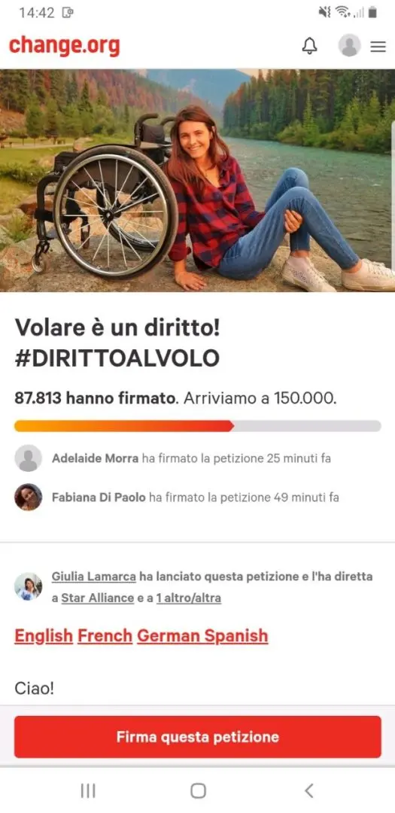

Petizione #dirittodivolo

Oggi voglio parlarvi di un'argomento che mi piacerebbe approfondire con voi e mi tocca molto. .una petizione intitolata #dirittodivolo.
Tutti amano viaggiare, chi in treno, chi in nave, chi lo fa con autobus e tantissimi lo fanno con gli aerei. Uno dei mezzi più sicuri, secondo i dati statistici.
Nella routine di tutti i giorni però, nessuno si sofferma a pensare al meglio per gli altri. È la vita, non è una questione di cattiveria o di egoismo.
Tra gli amici che seguo e conosco, vicini e lontani, ne ho tanti che partono periodicamente e come di rito, ormai è diventata una moda, selfarsi (farsi foto in ogni e dove). Abbiamo dunque visto e soprattutto fatto, anch'io in primis, foto in viaggio, sul luogo che visitiamo, monumenti, cambiamenti, ma anche nei mezzi di trasporto.

Parlando della mia esperienza personale, tutte le volte che ho fotografato euforica un mio viaggio in treno, piuttosto che in aereo, l'ho fatto perché soddisfatta di esserci riuscita.
Questo mi è successo proprio perché c'è ancora molta limitazione su questo punto.
Eppure siamo nell'epoca che con un click si può fare di tutto.
Perché dico così? Riprendendo il discorso iniziale, tutti viaggiano ma vi fate mai la domanda se i metodi e le condizioni di un disabile in viaggio siano le migliori?
Ci sono abbastanza confort?

C'è assistenza adeguata?
Che sia indipendentemente per viaggio di piacere o di lavoro. Ho davvero, negli anni, trovato difficoltà.
Sono stata in Germania nel 2017, un volo con scalo.
L'itinerario era Bari - Berlino, fare scalo e partire per Baden-Baden.Innanzitutto vorrei dire che, nonostante gli assistenti si impegnino a mettere a proprio agio i passeggeri con difficoltà di movimento, si nota chiaramente la poca conoscenza e dimestichezza con chi devono poi aiutare. Questa è una cosa che accomuno a tutte le compagnie aeree e di ogni posto.
Quindi che siano assistenti italiani piuttosto che stranieri non fa differenza. Sono poco aggiornati.
Ti fanno sentire come se tu fossi il primo caso con disabilità che sta viaggiando.
Parliamo poi delle attese?

Io ho dovuto aspettare tutti i singoli passeggeri del volo, per poi salire sulla sedia 'magra' davanti a tutti.
Non che io sia una che voglia nascondersi ma, poiché c'è appunto, molta poca informazione in giro, fin troppa ignoranza oserei dire! Ti ritrovi con 200 sguardi addosso e magari anche mezza svestita perché non ti sanno prendere per bene dal passaggio della sedia 'magra' alla poltrona.
Con queste parole potrete capire da voi che una volta che vi siete sistemati in poltrona, sarà davvero un'impresa se voleste usufruire dei servizi igienici. Che non vi assicuro che siano adatti ai disabili.
Infatti, talvolta sono inesistenti e dunque strettissimi.
Insomma, viaggiare diventa uno stress se non prendi il viaggio con ottimismo. Ma tutto questo credo che con una sola voce non si può risolvere. Se ognuno di noi si impegna possiamo fare la differenza e cercare di inculcare alle tante compagnie aeree un pò di buon senso e soprattutto un pò di confort per i disabili, che parti dall'acquisto di un biglietto all'atterraggio a destinazione.

Per questo oggi voglio chiedervi di prestare un minuto di attenzione ad una petizione indetta da una ragazza, anch'essa disabile Giulia Lamarca.
Una ragazza che ha fatto della sua vita un viaggio e ha incontrato molti di questi disagi.
Vi posto qui sotto l'anteprima della petizione ed il link per firmare.Fatelo girare e diamo un grido al #dirittodivolo
PETIZIONE

Inoltre vi invito anche a seguirmi su instagram!